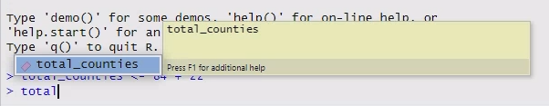
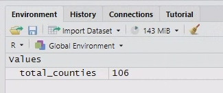

3 The grammar of coding
3.1 Introduction to Coding in R
To help us talk about coding, we need to learn some vocabulary. Five essential building blocks of any coding language are:
- Operators
- Variables
- Functions
- Arguments
- Comments
We’ll learn about each of them and practice typing some code into the Console and running it from there.
3.2 Operators
Operators are typically 1 or 2-character commands that correspond to very simple, common tasks.
For instance, all of the basic mathematical symbols are operators in most programming languages, e.g., + (addition), - (subtraction), * (multiplication), and / (division). In R, exponents can be expressed with either the caret, ^, or a double asterisk, **.
Thus, like Excel, R can function as a basic calculator.
Type 84 + 22 directly into the Console (bottom left quadrant, labeled “Console”) and hit Enter.
84 + 22
#> [1] 1063.3 Variables / Objects
Data can be saved as named variables, which allows you to refer to and use them later. In R these are usually called objects since the word “variable” is frequently used in the statistical sense instead. You can think of variables as analogous to nouns.
- In R, we use the arrow operator
<-to save objects. - We can save the output from our command above using the following code:
total_counties <- 84 + 22. - Then whenever we use the object
total_counties, R will substitute the value106.
Create and store an object by typing total_counties <- 84 + 22 into the Console and hit Enter. Now type total_counties and hit Enter.
total_counties <- 84 + 22
total_counties
#> [1] 106Tip: As you type, RStudio will suggest objects that are stored in your environment that start with the same characters.
You can either:
- click on them
- Use the arrow keys + Enter to select them.
This will save you time and also prevent typos from causing bugs!

Now you should be able to see the total_counties object in your Environment panel.

3.4 Functions
Functions are the commands that tell the program to do something. You can think of them as the verbs of a programming language. Functions are always followed by a set of brackets.
For example, the function getwd() will provide your current working directory (the location where R will read and save files).
Type the function getwd() into the Console and hit Enter. (Your output will look different than mine, because I’m using a different computer.)
getwd()
#> [1] "/home/runner/work/LECBioStats/LECBioStats"Info: As you type the command getwd(), RStudio will automatically add the ending bracket when you type the starting bracket. (You will see later that it also does the same thing with quotation marks.)
This helps avoid introducing bugs from forgetting to close your brackets.
3.5 Arguments
Most functions also take inputs called arguments that go inside the parentheses. Arguments are generally either:
- Data to process
- Settings that tell the function how to process the data
For example, the function sqrt(x) takes one argument, x, and calculates its square root.
Type sqrt(4) into the Console and hit Enter.
sqrt(4)
#> [1] 2One operator that can be useful for getting arguments into functions in R is the pipe operator: |>
The pipe operator passes data to the first argument of the next function. (You’ll see why this is useful later.)
For now, type 9 |> sqrt() into the Console and hit Enter.
9 |> sqrt()
#> [1] 3
3.6 Comments
Comments are another critical part of coding, although not part of the code itself. Comments explain what the code is doing, and are a crucial part of making your code understandable to both other people and to yourself. (Every programmer hates the feeling of going back to old code days/weeks/months/years after you first wrote it and thinking “What the #$&! was I doing here????” Commenting your code properly makes your life much easier.)
#.#symbol tells R to ignore whatever else follows on that line in the script (i.e. not interpret it as code).Type the statement
# Hello world!into the Console and hit Enter.There will be no output - because you’ve told R to ignore your input.